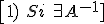
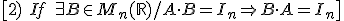
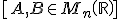
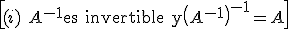
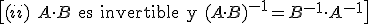
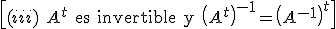
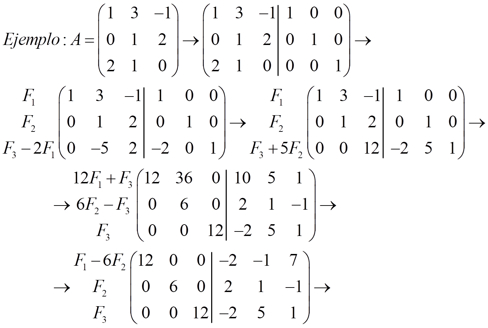
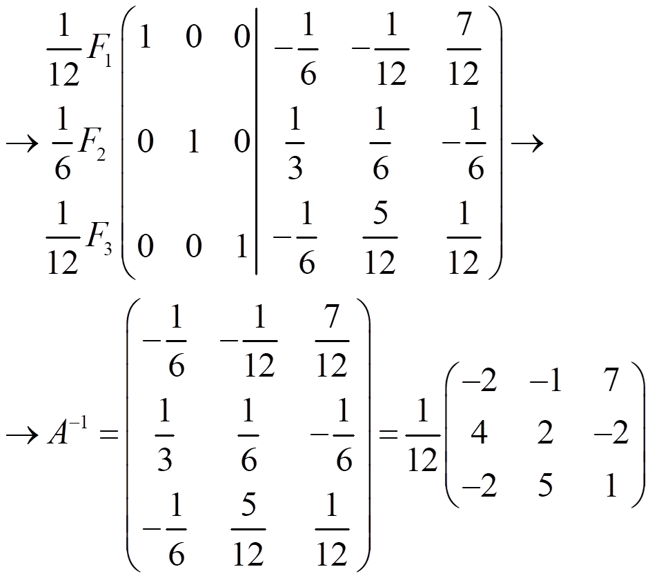
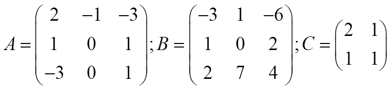
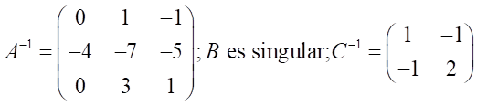

Una matriz
es invertible si

tal que A·B = B·A = In . Si no lo es se llama matriz singular.
B=A-1 se denomina inversa de A
NOTAS:

\[1)\ Si\ \exists {{A}^{-1}}]
es única

Propiedades:
Sean

invertibles,entonces:

\[(i)\ {{A}^{-1}}\text{es invertible y}{{\left( {{A}^{-1}} \right)}^{-1}}=A\]

\[(ii)\ A\cdot B\text{ es invertible y }{{(A\cdot B)}^{-1}}={{B}^{-1}}\cdot {{A}^{-1}}\]

\[(iii)\ {{A}^{t}}\text{ es invertible y }{{\left( {{A}^{t}} \right)}^{-1}}={{\left( {{A}^{-1}} \right)}^{t}}\]
Cálculo de la inversa por el método de Gauss-Jordan
Para calcular la inversa de una matriz invertible A, tenemos que transformar la matriz (A|I) en (I|A-1) usando estas operaciones elementales:
Cambiar dos filas: Fi ↔ Fj
Sustituir una fila por una combinación lineal de todas las filas: Fi↔ k1F1+k2F2+…+kiFi+…kmFm ki ≠ 0, donde kj son números reales, j = 1, 2, ….m
Ejemplo:


NOTA: si obtenemos una fila de ceros en la matriz de la izquierda, entonces A es singular (no tienen inversa)
Ejercicio. Calcula la inversa de estas matrices:

Soluciones:
